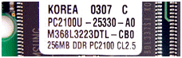
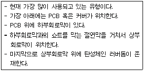
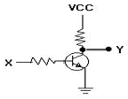
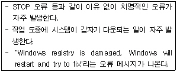

PC정비사-1급 (2008-04-06 기출문제)
1과목: PC운영체제
1. 64비트 Windows XP에 대한 설명으로 올바른 것은?
- 32비트 전용 CPU에도 64비트 운영체제를 설치할 수 있다.
- 64비트 시스템을 꾸미기 위해서 메인보드, 그래픽 카드, 하드디스크 등 모든 하드웨어가 64비트용 이어야 한다.
- 기존의 32비트 장치 드라이버 파일을 그대로 사용할 수 있다.
- 128GB의 RAM과 16TB의 가상 메모리를 지원한다.
(정답률: 69%)

2. Linux 시스템에서 현재 디렉터리의 경로를 보여주는 명령어는?
- cd
- pwd
- mkdir
- mv
(정답률: 84%)
3. Windows XP에서 사용할 수 없는 파일 시스템은?
- NTFS
- FAT16
- EXT2
- CDFS
(정답률: 75%)
4. 하드디스크를 포맷시킬 때 4G짜리 드라이브를 하나의 드라이브로 설정 할 수 있는 것은?
- FAT16
- FAT32
- FAT12
- NFS
(정답률: 81%)
5. Windows XP Professional에 관한 설명 중 틀린 것은?
- Windows NT와 Windows 2000의 검증된 코드기반 위에 구축되었기 때문에 보다 직관적인 사용자 환경은 물론 신뢰성 있는 비즈니스 컴퓨팅을 보장한다.
- Windows 98 SE 보다 36%의 빠른 성능을 나타내며 Windows 2000 Professional보다 36% 부팅이 빠르다.
- 최대 2GB RAM과 대칭형 멀티프로세서 2개를 지원할 수 있다.
- 기존 Windows 2000 Active Directory 환경에 완벽하게 통합되며 아울러 수백 개에 달하는 새로운 시스템 정책들을 보여준다.
(정답률: 80%)
6. Windows XP를 설치 한 다음 Windows 업데이트를 실행하여 업데이트 한다. 그 이유로 가장 타당한 것은?
- Windows 업데이트는 정품을 사용하고 있다는 확인을 받기 위해서이다.
- Windows 업데이트를 받지 않을 경우 30일이 경과하면 부팅이 안된다.
- Windows 업데이트를 하면 버그수정 및 보안 기능 강화가 된다.
- Windows 업데이트를 하면 새로운 운영체제가 자동으로 설치된다.
(정답률: 82%)
7. Windows XP의 디스크 관리에 대한 설명 중 잘못된 것은?
- Windows를 설치하고 부팅한 시스템 드라이브의 드라이브 문자는 변경할 수 없다.
- CD-ROM의 드라이브 문자는 고정되어 있으며, Windows 상태에서 변경할 수 없다.
- 전체 이동식 저장장치는 자동인식에 의하여 관리 되므로 이동식 저장소라는 관리 도구를 이용해 관리할 필요성이
- 디스크 조각 모음은 로컬 볼륨을 분석하고, 조각난 파일과 폴더를 찾아 통합하는 시스템 유틸리티이다.
(정답률: 74%)
8. Windows XP에서는 시스템 발생오류, 보안감사 같은 여러 가지 사건들을 기록으로 남기고 있다. 이러한 기록들을 확인하기 위한 메뉴는?
- 로컬 보안 정책
- ODBC
- 이벤트 뷰어
- 구성요소 서비스
(정답률: 69%)
9. 시스템복원 기능은 소프트웨어적 문제를 해결할 수 있다. 다음 항목 중 시스템 복원 기능을 이용하여 복원할 수 없는 것은?
- 사용자용 문서 파일
- Windows용 시스템 파일
- Windows 응용 파일
- 레지스트리
(정답률: 92%)
10. Windows XP의 레지스트리 구조에 속하지 않은 것은?
- HKEY_LOCAL_CONFIG
- HKEY_CURRENT_CONFIG
- HKEY_CLASSES_ROOT
- HKEY_USERS
(정답률: 80%)
11. 10m 내외의 단거리에서 사용하는 개인 무선 네트워킹 솔루션으로 가급적 케이블을 이용하지 않고 무선으로 각 가정의 기기들을 연결할 수 있는 저렴한 단거리 무선 네트워크는?
- LAN
- MAN
- VAN
- PAN
(정답률: 77%)
12. Windows XP의 네트워크 환경에서 NetBIOS 이름을 IP 주소로 매핑 시켜주는 역할을 하는 것은?
- HOSTS File
- LMHOSTS File
- DNS
- WINS
(정답률: 60%)
13. 다음 중 FAT를 NTFS로 변환하기 위한 올바른 명령어는?
- CONVERT C: /FS:FAT32
- CONVERT C: /FS:NTFS
- CONVERT /FS:NTFS C:
- CONVERT /FS:FAT32 C:
(정답률: 69%)
14. 감염 후 특징적인 증상은 매년 4월 26일 Flash Memory의 내용과 모든 하드디스크의 데이터를 파괴하는 바이러스는?
- 스파이웨어
- 마이둠웜
- 소빅웜
- CIH 바이러스
(정답률: 77%)
15. 전자우편함에 "Improtant Message From 사용자" 라는 제목이나 편지의 내용 중 "Here is that document you asked for don't saw anyone else" 가 있을 때 관련된 파일은?
- Macro 바이러스
- CHI 바이러스
- Happy99 바이러스
- Back Orifice 바이러스
(정답률: 53%)
2과목: PC주변기기
16. DDR-SDRAM의 규격은 DDR200, DDR266, DDR333 또는 PC1600, PC2100, PC2700 으로 표기한다. PCxxxx의 뒤 4자리 숫자가 의미하는 것은?

- 클럭 스피드
- Rising Edge
- 내부뱅크의 크기
- 최대의 전송속도
(정답률: 50%)
17. 하드디스크의 저장방식이 아닌 것은?
- NRZ(Non Return to Zero)
- IDE(Integrated Drive Electronic)
- MFM(Modified Frequency Modulation)
- RLL(Run Length Limited)
(정답률: 64%)
18. DMA에 관한 설명 중 틀린것은?
- 메인 메모리와 각 장치들끼리 CPU를 거치지 않고 데이터를 직접 전송하는 기술이다.
- 메모리와 주변 장치 간의 데이터 전송통로를 DMA 채널이라고 한다.
- 2개의 DMA컨트롤러를 장착하여 총 8개의 DMA를 사용할때 채널 4는 하위의 네 개 채널에 종속, 사용되어 I/O로 사용이 가능하다.
- 플로피 디스크 드라이브, 사운드 카드 등에서 사용된다.
(정답률: 57%)
19. DVD에 대한 설명으로 옳지 않은 것은?
- MPEG-1 방식으로 동영상이 압축되어 있다.
- 화면비율이 16:9로 HDTV와 같다.
- DVD는 CD와 같은 12cm의 크기를 가진다.
- 돌비 디지털 서라운드와 멀티 앵글 기능을 지원한다.
(정답률: 84%)
20. 아래에서 설명하는 키보드의 접점방식은?

- 순수 기계식 스위치 타입(Pure Mechanical Switch Type)
- 폼 일레멘트 타입(Form Element Type)
- 멤브레인 스위치 타입(Membrane Switch Type)
- 캐패시터 스위치 타입(Capacitive Switch Type)
(정답률: 69%)
21. 전자 사진식 인쇄기의 일종으로 사진 복사기의 기술을 바탕으로 하여 인쇄 속도가 빠르고 인쇄된 문자도 활자에 가까운 정밀도를 갖는 것은?
- 레이저 프린터
- 잉크젯 프린터
- 도트 메트릭스 프린터
- 라인 프린터
(정답률: 75%)
22. 3D 그래픽카드에서 제공되는 기능 중에서 3차원 물체의 움직임이나 입체감을 표현할 때 사용되는 것은?
- 디더링
- 지오메트리
- 페이지 브리핑
- 모아레
(정답률: 75%)
23. 비디오 메모리가 2MB 인 비디오 카드가 있다. 해상도별 최대 컬러수가 옳지 않은 것은?
- 800×600 : 1천6백만색
- 1024×768 : 6만5천색
- 1280×1024 : 256색
- 1600×1200 : 16bit
(정답률: 81%)
24. 다음 중 Intel사에서 제조한 CPU가 아닌것은?
- 요크필드Q9300
- 리마LE-1640
- 울프데일E8200
- 시더밀631
(정답률: 84%)
25. CPU와 주기억장치 또는 CPU와 주변장치 사이에서 데이터의 입, 출력시 발생되는 속도의 차이를 줄여주는 기억 장치는?
- DRAM
- Cache RAM
- EDORAM
- PROM
(정답률: 87%)
26. SCSI에 대한 설명이다. 옳지 않은것은?
- 스카시 하드의 디스크 경우에는 ID 번호를 설정한다.
- 다른 스카시 장치와 ID 번호가 일치하면 안된다.
- 하드디스크와 같이 빠른 장치는 높은 번호를 지정한다.
- 케이블 연결 방법은 EIDE와 동일하다.
(정답률: 74%)
27. 다음 중 CD와 DVD의 1배속 속도가 바르게 나열된 것은?
- CD 130KB/초 - DVD 1350KB/초
- CD 140KB/초 - DVD 1550KB/초
- CD 150KB/초 - DVD 1350KB/초
- CD 160KB/초 - DVD 1550KB/초
(정답률: 72%)
28. 사운드 카드의 전송방법 중 무전기와 유사한 전송방법은?
- Full Duplex
- Half Duplex
- FM
- Sampling
(정답률: 74%)
29. 갑작스런 정전에도 컴퓨터에 전원을 계속 공급해 줄 수 있는 장치는?
- Power Saver
- IPS
- UPS
- Power Supply
(정답률: 87%)
30. 컴퓨터 시스템 운영 시 전압이 일정하게 유지되도록 조절해주는 장치는?
- UPS
- AVR
- FEP
- SMPS
(정답률: 91%)
3과목: 디지털 논리회로
31. 집적 회로 소자의 특성으로 옳지 않은 것은?
- 소자의 파라미터들이 서로 정합을 이루고 온도 특성이 개선된다.
- 저항과 캐패시터 값의 허용오차 범위가 크다.
- 안정된 범위의 저항과 캐패시터를 만들 수 있다.
- 부품의 온도 계수는 크고, 전압에 민감하다.
(정답률: 48%)
32. 다이오드에 관한 설명 중 옳지 않은 것은?
- 한쪽 방향으로만 전류가 흐른다.
- 교류를 직류로 변환시키는 역할을 한다.
- 복조파에 실려 있는 신호파형을 축출하는 것을 검파 다이오드라고 한다.
- 제너다이오드는 역방향 전류가 가해졌을 때 전압 변동이 크다.
(정답률: 81%)
33. 부호 비트를 포함한 총 5개의 비트를 사용하여 10진수 (+13)을 부호화된 2진수로 표현하면?
- 00111
- 10111
- 11101
- 01101
(정답률: 58%)
34. 다음 회로 동작 게이트는?

- NAND
- AND
- OR
- NOT
(정답률: 67%)
35. 다음 소자 중에서 n개의 입력을 받아서 제어 신호에 의해 그 중 1개만을 선택하여 출력하는 것은? (단, 제어 신호는 log2 n개이다.)
- Multiplexer
- Demultiplexer
- Encoder
- Decoder
(정답률: 57%)
4과목: PC유지보수
36. 올바른 모니터와 그래픽 카드 설정 및 사용 방법으로 잘못된 것은?
- 모니터 크기를 고려하여 해상도를 설정한다.
- 눈이 피곤하지 않도록 화면 주사율은 가장 낮은 주파수로 설정해서 사용한다.
- 장치에 맞는 드라이버를 설치해서 사용한다.
- 컴퓨터에 문제가 없으면 그래픽 하드웨어 가속 수준은 최대로 설정한다.
(정답률: 84%)
37. PC에 정해진 시간동안 작업을 하지 않으면 자동으로 전원을 절전해주는 Award 바이오스의 BIOS SETUP에 해당되는 것은?
- Integrated Peripherals
- Ide Hdd Auto Detection
- Quick Power On Self Test
- Power Management Setup
(정답률: 84%)
38. POST 과정의 순서가 바르게 나열된 것은?
- 시스템 버스 테스트-그래픽 카드 테스트-메모리 테스트-키보드 테스트-디스크 테스트-P&P 기능 동작-CMOS 내용확인-DMI 기능 동작
- DMI 기능 동작-그래픽 카드 테스트-메모리 테스트-키보드 테스트-디스크 테스트-P&P 기능 동작-CMOS 내용확인-시스템 버스 테스트
- 시스템 버스 테스트-P&P 기능 동작-메모리 테스트-키보드 테스트-디스크 테스트-그래픽 카드 테스트-CMOS 내용확인-DMI 기능 동작
- 시스템 버스 테스트-CMOS 내용확인-그래픽 카드 테스트-메모리 테스트-키보드 테스트-P&P 기능 동작-디스크 테스트-DMI 기능 동작
(정답률: 95%)
39. 컴퓨터에 전원을 넣고 Windows XP가 부팅이 되기 전 암호를 입력한 다음 부팅이 되게 하고자 한다. 바이오스의 어느 항목을 변경하여야 부팅할 때 암호를 물어보는가? (항목, 설정 값)
- User Password, System
- User Password, SETUP
- Password Check, System
- Password Check, SETUP
(정답률: 56%)
40. 사용중인 장비의 전원을 끄지 않은 상태에서 하드디스크나 심지어 전원을 교체해도 시스템에서 바로 인식하는 기술로 PnP의 발전된 형태라 할 수 있는 것은?
- Hot Swap
- 스카시
- PCI
- ACI
(정답률: 87%)
41. 컴퓨터 부팅 시 "8042 Gate-A20 Error"라는 메시지가 나왔다. 그 원인으로 올바른 것은?
- 키보드 연결 불량
- 키보드 컨트롤러 고장
- 마우스 연결 불량
- 마우스 포트 고장
(정답률: 74%)
42. 다음 볼륨의 종류 중 두 개 이상의 하드디스크에 있는 할당되지 않은 공간영역을 하나의 논리 볼륨으로 결합하여 효율적으로 사용할수 있게 해주는 것은?
- 단순볼륨
- 스팬볼륨
- RAID-5볼륨
- 미러볼륨
(정답률: 66%)
43. 다음 Award 바이오스의 BIOS SETUP 중 "CPU의 클록이나 메모리 타이밍 값을 조정"할 때 사용하는 메뉴는?
- Frequency/Voltage Control
- PC Health Status
- Integrated Peripherals
- PnP/PCI Configurations
(정답률: 78%)
44. DLL(Dynamic Link Library) 파일 관련 오류 발생 시 보호된 파일을 찾아내는 명령어는?
- sfc/scannow
- scanreg/restore
- sys A:C:
- convert C:/FS:NTFS/X
(정답률: 69%)
45. Windows XP에서 시스템에 오류가 발생할 때마다 마이크로소프트로 오류 내용을 보낼지 묻는 창이 열리는데 이창을 열리지 않도록 설정할 수 있는 곳은?(단 제어판은 "종류별 보기"로 설정되어 있다.)
- [제어판] - [성능 및 유지관리] - [시스템]
- [제어판] - [내게 필요한 옵션]
- [제어판] - [성능 및 유지관리] - [관리 도구] - [데이터 원본(ODBC)]
- [제어판] - [성능 및 유지관리] - [관리 도구] - [성능]
(정답률: 76%)
46. Windows가 정상적으로 종료되지 않는 이유로 가장 부적당한 것은?
- Windows에서 실행중인 프로그램을 비정상적으로 종료했기 때문이다.
- 시작 프로그램과 Windows가 충돌하기 때문이다.
- 램 상주 프로그램과 Windows가 충돌하기 때문이다.
- 바이오스를 최선 버전으로 업데이트를 했기 때문이다.
(정답률: 87%)
47. 다음과 같은 증상이 발생했을 때 점검해야 할 장치는?

- HDD
- CPU
- Memory
- FDD
(정답률: 68%)
48. CPU와 메모리의 대역폭을 맞추기 위해 듀얼 채널 메모리 구성을 통해 업그레이드 하고자 한다. 올바르지 않은 것은?
- DDR 400, DDR 333 메모리를 혼용해 채널을 구성해도 좋으나 이 경우 속도가 높은 메모리 속도로 동작한다.
- 집적도 다른 2개의 모듈 램이라도 클럭 스피드가 같으면 사용이 가능하다.
- DRAM 버스 대역폭이 같아야 한다.
- 같은 채널을 구성하는 모듈 램 모두 단면 램이거나, 양면 램이어야 한다.
(정답률: 73%)
49. Over Clocking에 대한 일반적인 설명 중 잘못된 것은?
- CPU의 클럭 설정은 점퍼 비율 딥스위치를 조정하거나 BIOS 설정에서 조정한다.
- 오버클럭킹을 사용하게 되면 CPU의 온도가 오버클럭킹을 하기전보다 높아지므로 주의한다.
- 오버클럭킹에는 외부 클럭을 올리는 방법과 클럭 배수를 올리는 방법이 있다.
- 메인보드에서 지원하는 클럭 수 보다 높게 오버클럭킹이 가능하다.
(정답률: 80%)
50. 유지보수 작업에서 회로 시험기를 이용하여 연결선의 단선 여부를 측정하고자 한다. 회로 시험기의 선택 스위치는 어느 단자에 위치시켜야 하는가?
- 저항 측정 단자
- 전류 측정 단자
- 교류 전압 측정 단자
- 직류 전압 측정 단자
(정답률: 67%)
5과목: PC네트워크
51. 어떤 컴퓨터든 통신 세션을 시작할 수 있는 통신 모델을 지칭하며 네트워크에 연결되어 있는 모든 컴퓨터들이 서로 대등한 입장에서 데이터나 주변장치 등을 공유할 수 있다는 의미를 담고 있는 모델은?
- Client/Server
- Master/Slave
- Peer to Peer
- Network to Network
(정답률: 80%)
52. 가정에서 두 대의 PC간, 허브 없이 연결하여 간단한 홈 네트워크를 구성하고자 한다. 이때 필요한 준비물은?
- 랜카드, IP 공유기
- UTP 크로스 케이블, 랜카드
- UTP 다이렉트 케이블, IP 공유기
- 시리얼 케이블, 가정용 게이트웨이
(정답률: 66%)
53. 스위칭 방법 중 컷스루(Cut-Through) 방법에 대한 설명 중 올바른 것은?
- 가상 헤더에 목적지의 IP 주소와 송신측의 IP 주소, IP 헤더로 사용되는 TCP 프로토콜 유형번호, 헤더 및 사용자 데이터의 길이를 더한 값을 넣는 것이다.
- 헤더의 목적지 주소만을 검색해서 프레임을 목적지 포트로 전송하는 방법이다.
- 프레임의 시작인 프리앰블(Preamble)부터 FCS(Frame Check Sequence)까지의 모든 데이터를 확인한 후 목적지 포트로 전송하는 방법이다.
- 전체 프레임을 수신한 후 CRC 코드만을 삽입하여 목적지로 전송한다.
(정답률: 66%)
54. 스니퍼링(Sniffering)을 원천적으로 막을 수 있는 방법은?
- 스위치 허브의 사용
- 라우터의 사용
- DNS의 사용
- 스태커블 허브의 사용
(정답률: 67%)
55. 라우팅 테이블에 의한 최소 홉 수를 계산하는 방식으로, 네트워크에 노드가 추가되거나 제거될 때마다 변화된 인접 네트워크의 라우팅 정보들을 네트워크에 있는 모든 라우터에 전송하는 방식은?
- PING
- ICMP
- LSA
- RIP
(정답률: 65%)
56. 이더넷 장비에서 사용되는 표준 케이블이 아닌 것은?
- RG58
- UTP
- STP
- 5C2V
(정답률: 66%)
57. 회사를 인수 합병한 관계로 양쪽의 네트워크를 통합 운영하고 있다. 그런데 서로다른 E-Mail 애플리케이션을 사용하는 관계로 메일을 정상적으로 주고 받으려면 Convert시켜야 한다. 이에 적당한 장치는?
- Multiplexer
- Router
- Gateway
- Brouter
(정답률: 65%)
58. TCP의 기능에 속하지 않는 것은?
- 분할된 세그먼트들을 전송할 경로를 결정하는 작업
- 전달할 메시지를 적당한 크기의 세그먼트 단위로 분할하는 작업
- 전달 받은 여러 개의 세그먼트들을 모아서 원래의 메시지로 복구하는 작업
- 전달 받을 메시지를 구성하는 세그먼트 중에서 분실된 것이 있는지를 확인하는 작업
(정답률: 39%)
59. IPX/SPX 프로토콜에 대한 설명 중 올바른 것은?
- IPX는 OSI 모델의 전송 계층에 해당한다.
- SPX와 IPX 패킷구조에서 헤더의 크기가 동일하다.
- SPX는 OSI 모델의 네트워크 계층에 해당한다.
- SPX 프로토콜은 접속형(Connection Oriented) 통신 프로토콜이다.
(정답률: 48%)
60. nbtstat.exe는 NetBIOS 이름 확인 문제 해결에 유용한 도구이다. 이 중 클라이언트와 서버 연결 목록을 표시하기 위한 사용법은?
- nbtstat -n
- nbtstat -c
- nbtstat -r
- nbtstat -s
(정답률: 65%)